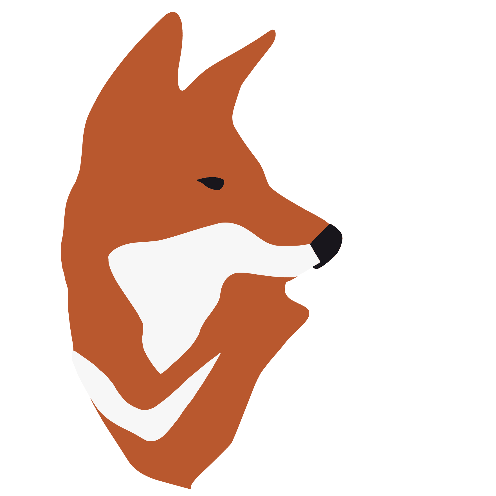

Support Wolves

Wolf Haven International
Wolf Haven International was founded in 1982 by Steve and Linda Kuntz to provide
life-long sanctuary and care for captive-born wolves. Today, the sanctuary is accredited by
both the Global Federation of Animal Sanctuaries and the American Sanctuary Association and
works to educate the public on the behavior and needs of wolves.
Wolf Haven International Webside Open In a New Tap
California Wolf Center
The California Wolf Center was founded in 1977 by Paul and Judy Kenis to assist in the recovery
of wild wolf species through education, conservation, and research. Today, the charity is heavily
involved in captive breeding programs for wolves, including the endangered Mexican gray wolf.
California Wolf Center Webside Open In a New Tap

International Wolf Center
The Committee for the International Wolf Center was founded in 1985 by a group of biologists led by
Dr. L. David Mech, after they consulted in a successful ‘Wolves and Humans’ exhibit at the Science Museum
of Minnesota. The International Wolf Center first opened its doors in June 1993 as an education hub to teach
local communities about wolves and to allow visitors to get up close and personal with these enigmatic but
misunderstood animals.
International Wolf Center Webside Open In a New Tap

W.O.L.F. Sanctuary
The W.O.L.F. Sanctuary was founded in 1995 by Fred Johnston to improve the lives of wolves and wolf-dogs across
America. Today, the charity manages a successful sanctuary for wolves that have been rescued from unsuitable captive
environments..
W.O.L.F. Sanctuary Webside Open In a New Tap

Wolf Conservation Center
The Wolf Conservation Center was founded in 1999 by Helene Grimaud to protect two of the most endangered wolf species;
the Mexican gray wolf and the Red wolf. Today, the charity participates heavily in reintroduction programs for both species
and advocates for more protection for them in the wild.
Wolf Conservation Center Website Open In a New Tap

Ethiopian Wolf Conservation Program
The Ethiopian Wolf Conservation Program was founded in 1995 by Claudio Sillero and Karen Laurenson in response to a scientific
study that revealed there were only around 500 of these animals left in the wild. It came about as a partnership between the Born
Free Foundation and the University of Oxford’s Wildlife Conservation Research Unit (WildCRU). Today, the charity is recognized as a
world leader in the field of carnivore conservation.
Ethiopian Wolf Conservation Program Webside Open In a New Tap
Yellowstone Forever
Yellowstone Forever was founded in 1933 as the official nonprofit partner of Yellowstone National Park. The charity was responsible
for the first-ever reintroduction of Gray wolves to the park after they were eradicated from the area in the 1920s. Today, their Yellowstone
Wolf Project is one of the most detailed studies of a large carnivore in the world.
Yellowstone Forever Webside Open In a New Tap
Defenders Of Wildlife
Defenders Of Wildlife was originally founded as the Defenders Of Fur Bearers in 1947 to preserve wild animal species in North America. Today, the
charity has extended its mission to include wildlife habitat and biodiversity. However, their main focus is still on the preservation of wild carnivores,
including wolves.
Defenders Of Wildlife Webside Open In a New Tap
American Wolf Foundation
The American Wolf Foundation was founded in 2018 by Rachel Guthrie. As a child, she wanted to be a veterinarian but after learning about the plight of the
Red wolf she decided she needed to act. She set up the American Wolf Foundation in her hometown of Missouri in the hope that her daughter would be able to
hear the characteristic howl of Red wolves in her lifetime. Today, the charity works to unite key stakeholders to ensure conflict-free conservation for all wolf species in America.
American Wolf Foundation Webside Open In a New Tap